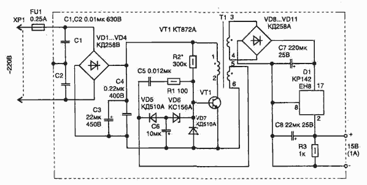
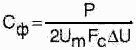

Маломощный импульсный блок питания
Данный источник может применяться для питания любой нагрузки мощностью до 15...20 Вт и имеет меньшие габариты, чем аналогичный, но с понижающим трансформатором, работающим на частоте 50 Гц.

Рис. 1 -Схема маломощного импульсного блока питания
Источник питания выполняется по схеме однотактного импульсного высокочастотного преобразователя. На транзисторе собран автогенератор, работающий на частоте 20...40 кГц (зависит от настройки). Частота настраивается емкостью С5. Элементы VD5, VD6 и С6 образуют цепь запуска автогенератора.
Во вторичной цепи после мостового выпрямителя стоит обычный линейный стабилизатор на микросхеме, что позволяет иметь на выходе фиксированное напряжение, независимо от изменения на входе сетевого (187...242 В).
В схеме применены конденсаторы:
- С1, С2 — К73-16 на 630 В;
- СЗ — К50-29 на 440 В;
- С4 — К73-17В на 400 В;
- С5 — К10-17;
- С6 — К53-4А на 16 В;
- С7, С8 — К53-18 на 20 В.
Резисторы могут быть любыми. Стабилитрон VD6 можно заменить на КС147А.
Импульсный трансформатор Т1 выполняется на ферритовом сердечнике М2500НМС-2 или М2000НМ9 типоразмера Ш5×5 (сечение магнитопровода в месте расположения катушки 5×5 мм с зазором в центре). Намотка сделана проводом марки ПЭЛ-2. Обмотка 1-2 содержит 600 витков провода диаметром 0,1 мм; 3-4 — 44 витка диаметром 0,25 мм; 5-6 — 10 витков тем же проводом, что и первичная обмотка.
В случае необходимости вторичных обмоток может быть несколько (на схеме показана только одна), а для работы автогенератора необходимо соблюдать полярность подключения фазы обмотки 5-6 в соответствии со схемой.
Настройка преобразователя заключается в получении устойчивого возбуждения автогенератора при изменении входного напряжения от 187 до 242 В. Элементы, требующие подбора, отмечены звездочкой "*". Резистор R2 может иметь номинал 150...300 кОм, а конденсатор С5 — 6800...15000 пФ. Для уменьшения габаритов преобразователя в случае меньшей снимаемой во вторичной цепи мощности номиналы электролитических фильтрующих конденсаторов (СЗ, С7 и С8) можно уменьшить. Их величина связана с мощностью нагрузки соотношением:

где
Р — мощность в цепи нагрузки, Вт;
Um — амплитудное значение выпрямленного напряжения (для действующего на входе сетевого напряжения 242 В амплитуда составляет 342 В);
Fc — частота сети, для расчета СЗ она берется 50 Гц;
ΔU — максимальный размах пульсации выпрямленного напряжения, допустимый для применяемого типа конденсатора (берется из справочника: так для К50-29 он
составляет 10...14%, т. е. 34 В).
Конструкция корпуса устройства должна предусматривать установку транзистора и стабилизатора D1 на радиаторы, а также экранирование всей схемы для снижения уровня излучаемых помех.